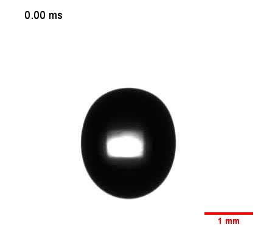
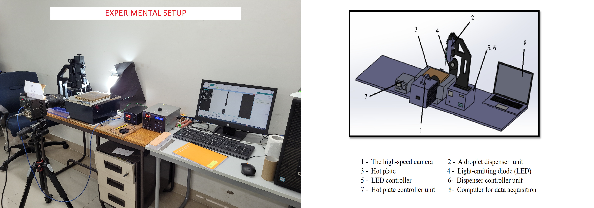
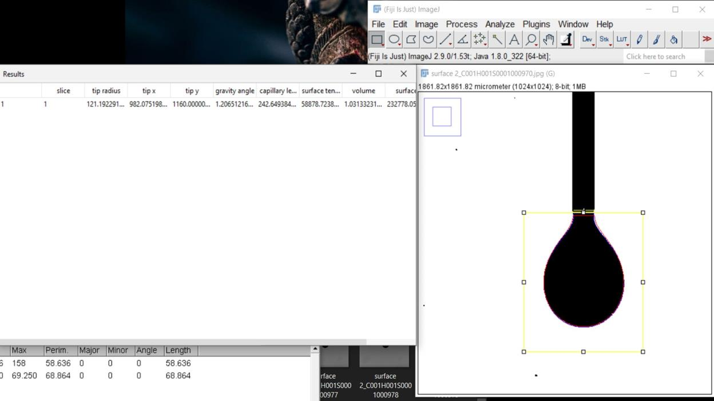
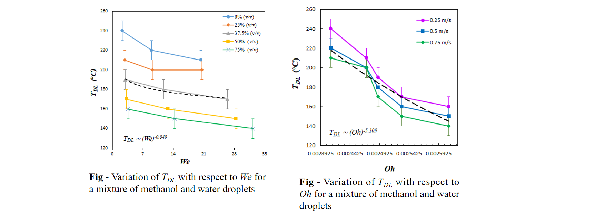
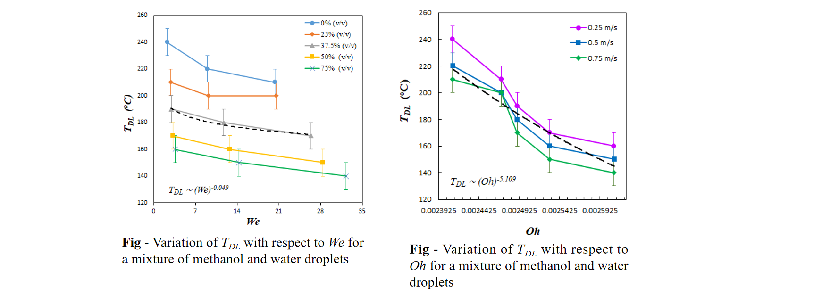

Projects
Experimental Dynamic Leidenfrost Study of Droplets of n-alcohol - water binary mixtures
The Leidenfrost Effect
The Leidenfrost effect occurs when a liquid droplet is placed on a surface significantly hotter than its boiling point. The heat causes the bottom of the droplet to vaporize rapidly, creating a cushion of vapor that suspends the droplet above the surface. This vapor layer insulates the droplet, reducing contact and slowing down evaporation. As a result, the droplet can "levitate" or slide across the surface, exhibiting unique dynamics and prolonged lifespan compared to direct contact.

Experimental Setup
Measurement of Surface Tension: Pendant Drop Method using Fiji (ImageJ)
Results
n-Alcohol - water binary mixtures, starting from methanol to pentanol, at various concentrations were used.
 

NOTE: Due to pending publication, all data is not shared publicly.
© 2023 Simranjeet Singh